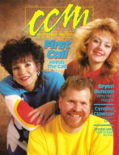

CMnexus
: Contemporary Christian culture, music, and media.
|
CCMFeb 1988, vol. 10, iss. 8
| Cover |
|---|
|  | | Writers in this Issue |
|---|
Allison, Kevin
Anderson, Warren
Appell, Thomas
Baker, Paul
Dale, Christopher
Davis, Howard
Donaldson, Devlin
Fischer, John
Harper, Sharon
Hicks, Hillary Clay
Mulder, Art
Newcomb, Brian Quincy
Rabey, Steve
Smith, Tim A.
Thorson, Paul
|
Cover Feature:
- "What Happens When You Heed The Call" by Sharon Harper
Article:
- "The Meaning of Life" by Brian Quincy Newcomb
- "Roll Call" by Sharon Harper
Christian Musician:
- "A Singer's Singer" by Thomas Appell
Toys in the Band:Notebook:
- "Big Singer In A Small Package" by Kevin Allison
- "Thatcher Intervenes to Send Barinov to West"
- "Song Contest Extended"
- "DeGarmo and Key Concert Challenged"
- "Dear Mr. Jesus"
- "Facing The Music"
Shake Radio Special
Whatever Happened To ...?:Celebrating Our 10th Year:What's New:
- Tonio K. - Notes from the Lost Civilization by Brian Quincy Newcomb
- Undercover - 3-28-87 by Brian Quincy Newcomb
- Aretha Franklin - One Lord, One Faith, One Baptism by Hillary Clay Hicks
- Steve Archer - Off the Page by Christopher Dale
- Nancy Honeytree - Every Single Day by Devlin Donaldson
- Vanessa Bell Armstrong - Vanessa Bell Armstrong by Tim A. Smith
- Commissioned - On the Winning Side by Tim A. Smith
- Pat Nobody - Nobody Special by Brian Quincy Newcomb
- Deborah Peters - Freedom by Devlin Donaldson
- Cynthia Clawson - HymnSinger by Warren Anderson
- Gordon Jensen - Tuesdays and Thursdays by Warren Anderson
- Glenn Wallace - A Song Is Not A Song Until It's Sung, We Were Children Once by Brian Quincy Newcomb
- The Walk - The Longing by Brian Quincy Newcomb
- Shelly T Band - Out of Control by Brian Quincy Newcomb
- Dan Marler - Dan Marler by Brian Quincy Newcomb
- various artists - Can Christians Rock & Roll [video], Rock and Roll: A Search for God [video] by Steve Rabey
In Concert:
- "Macon Coliseum, Macon, GA" by Howard Davis
- "Redeemed Reformer Christian College, Lancaster, OH" by Art Mulder
The Issue:
- "Are We Starstruck?" by Paul Thorson
John Fischer:
- "Jesus (bleep)" by John Fischer
|
|
<>